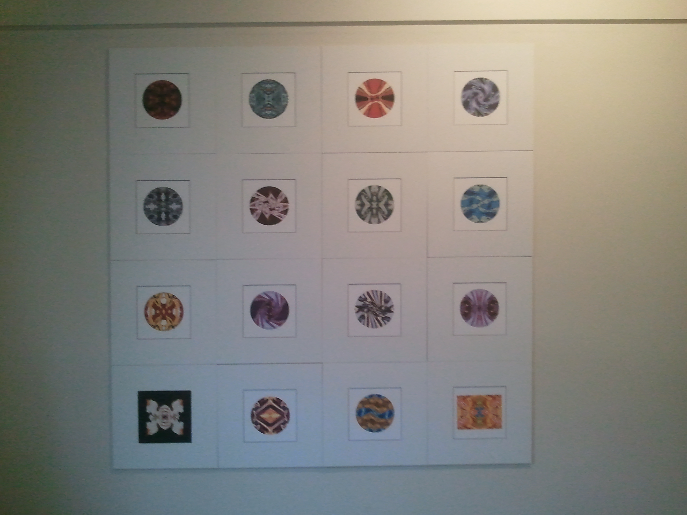
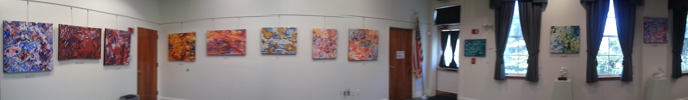
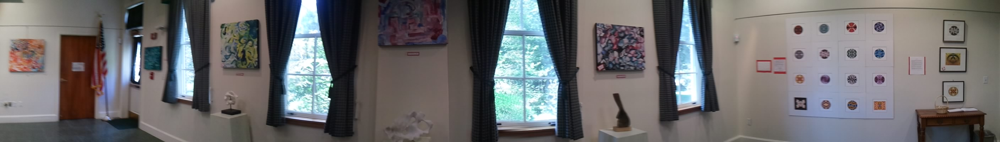

Bubbles & Boxes Exhibit July 2011
This past July, 2011, I had my first month-long gallery exhibition, "Bubbles & Boxes". The pieces were selected from a collection of abstract oil paintings and digitally generated artwork from the past few years.
When I paint I follow a natural flow of patterns, shapes and textures. I look to create realms that pulls me into a place of curiosity and imagination. I consider the fundamental elements in my work to be the ambiguity of space and time, rhythm, ordered chaos and fluidity of a line.

The "Boxes", or oil paintings emerged organically from meditations on nature, music, poetry and architecture. The paintings are influenced by subjects as diverse as Egyptian Hieroglyphics, wild flowers, a forest canopy, John Coltrane and rock striations. Each painting began as three or four colors that were mixed directly on the canvas until completion.

In contrast to the abstract oil paintings, the "Bubbles", the computer generated mandalas (Sanskrit for ‘magic circles’) are symmetrical, ordered, and highly structured. They too began as colors and patterns, but were put through precise systematic movements.
